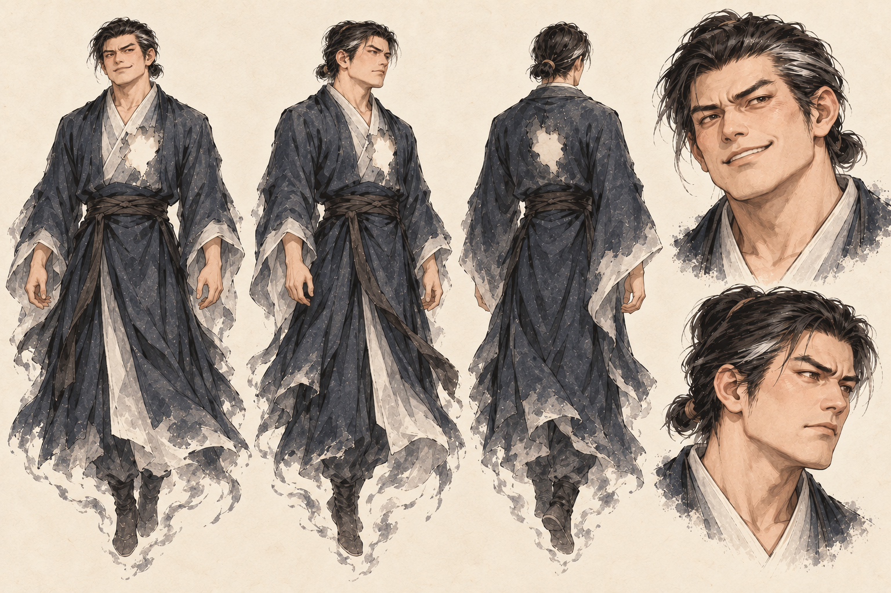
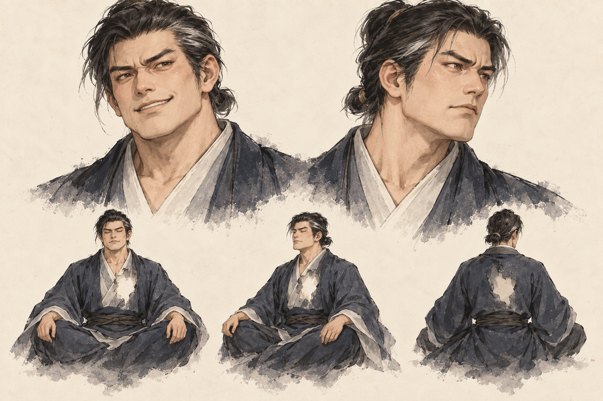
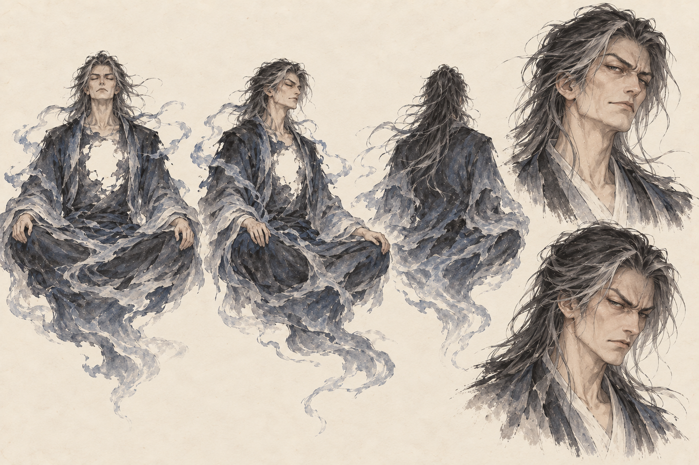
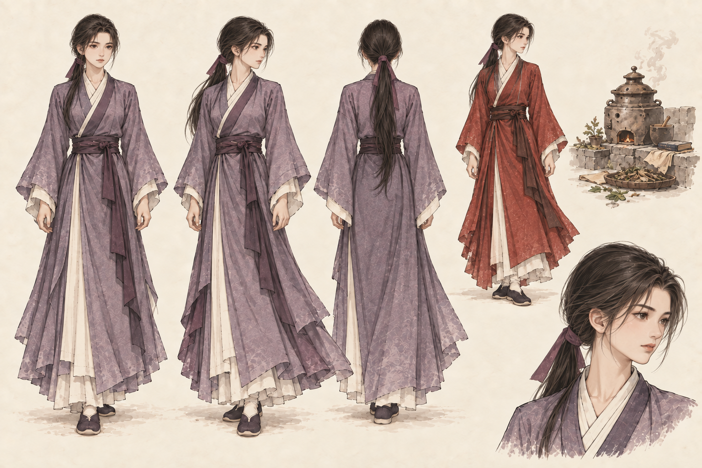
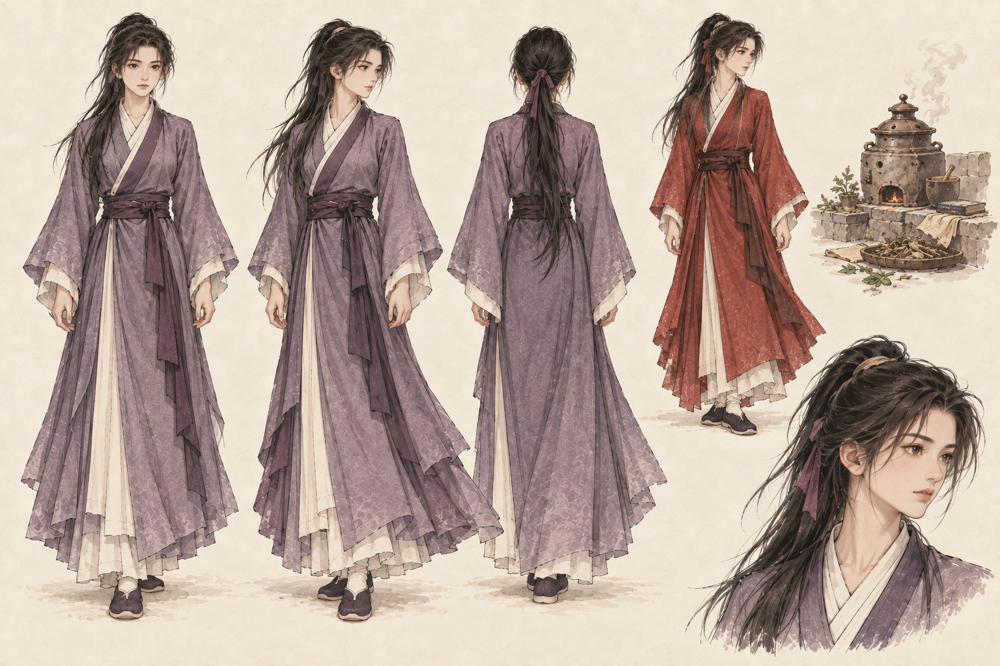
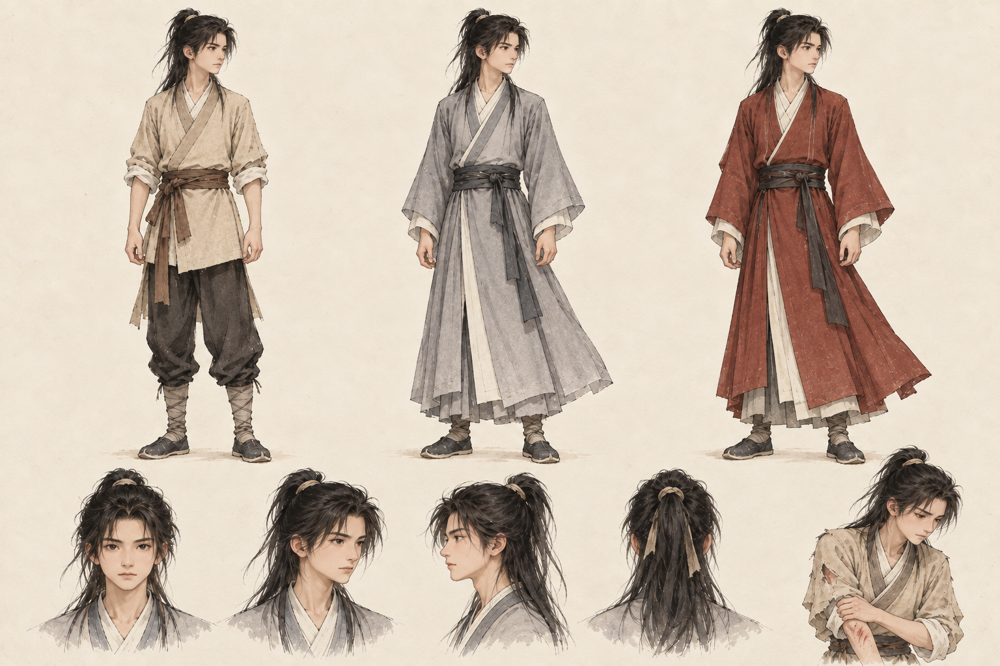

Vương Lâm
NPC truyện · Nhận diện đã duyệt
Dáng thiếu niên, tóc dài buộc nửa đầu, áo xám.
64 × 96 · Điểm chân (32, 88).
Ba nhân vật trọng tâm của chính truyện đã chốt trong GDD. Vương Lâm v2 và Lý Mộ Uyển v1 đã được chấp nhận; Tư Đồ Nam đứng v3 giữ mặt/tóc v2 đã được tạm chấp nhận làm chuẩn thiết kế. Người chơi điều khiển đệ tử riêng.
Đang nạp mẫu pixel…
NPC truyện · Nhận diện đã duyệt
Dáng thiếu niên, tóc dài buộc nửa đầu, áo xám.
64 × 96 · Điểm chân (32, 88).
Linh thể đứng · V3 tạm chấp nhận
Giữ mặt/tóc v2; đứng lơ lửng, chân duỗi, tay thả tự nhiên; ngực có khoảng khuyết.
64 × 96 · Điểm chiếu (32, 88), lơ lửng cao 4 px.
Áo tím chương 144 · Nhận diện đã chấp nhận
Tóc dài buộc đuôi, áo tím, dáng tập trung và dịu.
64 × 96 · Điểm chân (32, 88).
Tám mẫu tĩnh hiện tại cùng lưới 64 × 96. Tư Đồ Nam đứng là ART cho tương tác; animation lướt sẽ làm sau. Dạng ngồi 128 × 128 được lưu riêng cho cảnh tu luyện theo truyện.

Giữ mặt/tóc v2: hàm rộng, mũi thẳng, tóc đen buộc thấp có chút bạc. Chuyển sang đứng lơ lửng, chân duỗi, tay thả tự nhiên, mắt mở để đọc thần thái khi tương tác. Gấu áo và mép bàn chân đứt nhẹ cùng khoảng rỗng ở ngực biểu thị linh thể. Dự kiến di chuyển bằng lướt.
Tư thế đứng là chuyển thể cho MMORPG. Chương 46–47 giới thiệu qua tiếng nói; trạng thái ngồi/mắt nhắm ở chương 112 được lưu trong v2. Cảnh xuất hiện và mức độ tổn khuyết vẫn cần biên tập đúng mốc.
Prompt tạo hình · Nguồn pixel · Prompt pixel · Atlas · JSON.
Giữ bản ngồi xếp bằng/mắt nhắm tham chiếu chương 112 cho cảnh tương ứng. Đây là cùng mặt/tóc v2 với bản đứng hiện tại.

V1 được yêu cầu đổi mặt/tóc. Mẫu chỉnh đầu đã đổi tóc nhưng mặt còn gần bản cũ; bản v2 sau đó được vẽ lại từ brief mới.

Prompt v1 · Pixel v1 · Mẫu chỉnh đầu · Prompt mẫu chỉnh đầu.

Áo tím và tóc buộc đuôi lấy căn cứ từ cảnh luyện đan; áo đỏ là biến thể của lần gặp trước đó. Cùng một gương mặt qua hai bộ đồ. Lò đan/dược liệu là tham chiếu cảnh, chưa là asset đạo cụ được duyệt.
Prompt chỉnh tóc · Prompt đầu · Nguồn pixel · Prompt chỉnh tỷ lệ · Atlas · JSON.


Bộ đứng và đi Vương Lâm vẫn dùng nguồn đã duyệt. Hai tạo hình mới bổ sung nhận diện của bộ ba, chưa thay phiên bản Vương Lâm.
Hình mới vẽ bằng imagegen tích hợp. Nguồn và bộ prompt · Manifest · Căn cứ truyện và lựa chọn ART. Lý Mộ Uyển v1 đã chấp nhận; Tư Đồ Nam đứng v3 tạm chấp nhận làm chuẩn thiết kế, tiếp tục hoàn thiện ART sau. Thời điểm mở B/arc sau theo GDD.